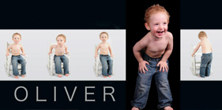
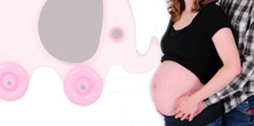
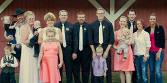

About Us
SF Photo was founded in 2003. Our desire is to capture your emotions and relationships in a beautiful & timeless manner. We want you to have classic images that remain relevant in spite of trends. Our attention to details & ability to push the boundaries of available light give our images an authentic, photojournalistic feel. We strive to capture the personality of our subjects in such a way that brings an immediate connection to those who know them well. After all, we feel like it’s our job to tell your story.
"Life is like photography, we all develop from the negatives."
- Author Unknown
What to Expect
Your session will be fun and relaxing! You will not feel rushed. If baby needs a bottle or your toddler needs a moment to play, that's ok! There is no need to stress out or worry about how the kids will act. I am a parent too and I understand everything they may do!
What to Bring
Bring Everything and Anything! Too much stuff is better than nothing! I will help you narrow your choices down! If you have a toy or prop or anything you want used in your photos, bring it! I do not mind! I am very flexible! Ideas include:
- Accessories
- Hats
- scarves
- headbands
Family & Children Sessions
This is all about capturing your family at this incredible time in your life..wherever that is. If you are welcoming a newborn or surrounded by toddlers or teenagers. As the most popular type of session, this is all about capturing the interaction - those quite and loud moments.and the fun.Together we choose an location..either at your home or one of the many places I love to shoot at. We stay away from formal posing with everyone looking at the camera and we get you guys in motion and having fun! I work hard to capture the genuine interaction and smiles. The good stuff. Top

Children Photography
| Family & Children |
| Type |
Sessions |
Details |
Price |
| Family & Children |
30 Minute Mini Session
(choice of 2 backgrounds) |
Approximately 30-45 minutes. Photos can be taken in the studio as well as outside on the studio site. Approximately 20 edited proofs to choose from. |
$50 |
|
Full Session
(studio or on-location) |
Photos can be taken in the studio as well as outside on the studio site. Approximately 40-50 edited proofs to choose from. |
$100 |
|
Engagement Session
(if not with a wedding package) |
Generally lasts approximately 1 1/2 - 2 hours. Studio photos (Inside and Outside) and on location. Approximately 40 edited proofs.
| $100 |
|
Baby's 1st Year
(photos taken quarterly) |
Photo Shoot up to 4 times during the baby's fist year. (at 3, 6, 9, 12 months) Includes a Storyboard/Collage of 1 image from each session. |
$175 |
|
Business Headshots |
Approximately 30 minutes. Up to 5-10 edited proofs on CD with digital copyright release. |
$50 |
Bellies & Babies
What an amazing time in your life, as you wait in anticipation of your baby's arrival. This session is all about capturing you and your partner.and that incredible belly.
From their tiny fingers and toes to taking their first steps, there are so many wonderful moments to be captured in your little one's first year. Take advantage of the baby's first year package and never forget this amazing time in your life. Top

Babies & Bellies
| Bellies & Babies |
| Type |
Sessions |
Details |
Price |
| Bellies & Babies Package |
Mini Maternity & Mini Newborn Session |
Approximately 40 edited proofs from the two sessions (combined). Includes an 8x10 collage of 1 to 4 photos from the two sessions. All proofs available online for viewing.
| $100 |
|
Maternity Session |
Up to 1 ~ 1 1/2 hours. Approximately 30-40 edited proofs. All proofs available online for viewing.
| $75 |
|
Newborn Session |
Up to 2 ~ 2 1/2 hours. Approximately 40-45 edited proofs. All proofs available online for viewing.
| $75 |
Seniors
We start with the most basic session for your yearbook, and even offer an extensive session with multiple outfits that includes time in the studio as well as outdoors at a location of your choice for the truly imaginative senior! Top
Seniors
| Seniors |
| Type |
Sessions |
Details |
Price |
| Senior Sessions |
Package 1 |
Basic Package. Up to 1 hour and 1 location. Approximately 20 ~ 30 edited proofs will be available to view. Photo of your choice edited and submitted for yearbook. |
$100 |
|
Package 2 |
2 ~ 2 1/2 hours and 2 locations. Approximately 40 ~ 50 edited proofs available to view online. |
$350 |
|
Package 3 |
Up to 4 hours and unlimited locations. Approximately 50 edited proofs available to view online. Bonus 8x8 - 20 page Album with up to 40 photos of your choice.
| $600 |
Wedding & Event Photography
Getting to know who you are as a couple, getting to know how you fell in love and got engaged, and getting know all the fun details about your wedding. But most importantly just sitting and talking with you and becoming friends. The connection I strive to make with my couples is really special and can only be described as a friendship. I just don't want to be your photographer. I want to become your friend. So that on your wedding day you know that I will do everything in my power to make it perfect and capture the images and moments you have always dreamed your wedding would be. So that when you look back on your album and pictures 30 years from know you really remember how great your wedding day was. Top

Wedding Photography
| Wedding & Event Photography |
| Type |
Sessions |
Details |
Price |
| Wedding Packages |
Package 1 |
Up to 4 hours of unlimited shooting on day of wedding. Approximately 300 photos. Pre-wedding, Formal, and Ceremony.
| $1200 |
|
Package 2 |
Up to 6 hours of unlimited shooting on day of wedding. Approximately 300-500 photos. Pre-wedding, Formal, Ceremony, Cake Cutting, Dinner & Toasts. Additional locations if desired and as time allows. |
$1700 |
|
Package 3 |
Up to 10 hours of unlimited shooting on day of wedding. Approximately 600-800 photos. Pre-wedding, Formal, Ceremony, Cake Cutting, Dinner & Toasts, Reception to Bouquet Toss/Grand March. $100 print credit and digital album. |
$2700 |